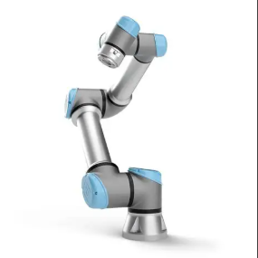
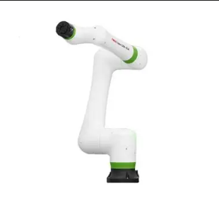
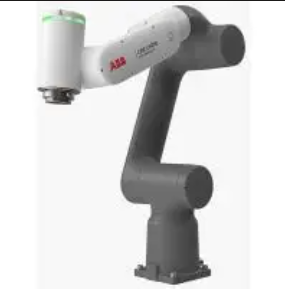

O QUE É UM ROBÔ COLABORATIVO?
Os robôs colaborativos – ou cobots – representam uma evolução na automação industrial ao permitirem a interação direta e segura entre humanos e máquinas, sem a necessidade de barreiras físicas. Projetados para compartilhar o mesmo espaço de trabalho, eles combinam sensibilidade, inteligência e controle de força para operar ao lado de operadores.
Baseados nas normas internacionais ISO 10218 e ISO/TS 15066, os cobots são leves, fáceis de programar e possuem sistemas de monitoramento que garantem a segurança em todas as situações.
Diferencial: colaboração ativa com humanos, eliminando grades e aumentando a flexibilidade produtiva.
MODOS DE COLABORAÇÃO
Quatro abordagens para interação segura
Parada Monitorada
O robô interrompe seu movimento quando o operador entra na área de trabalho compartilhada.
Condução Manual
O usuário guia fisicamente o robô para ensinar trajetórias e pontos de operação.
Monitoramento de Velocidade e Separação
Sensores ajustam a velocidade do robô com base na distância do operador.
Limitação de Potência e Força
O robô é projetado para que forças de impacto fiquem abaixo dos limites seguros para humanos.
CARACTERÍSTICAS E TECNOLOGIAS
- Sensores de torque integrados nas juntas
- Superfícies arredondadas e sem pontos de esmagamento
- Materiais leves (alumínio, compósitos)
- Programação intuitiva por demonstração ou tablets
- Modularidade e fácil realocação na fábrica
APLICAÇÕES E BENEFÍCIOS
Principais Aplicações
- Montagem de componentes eletrônicos
- Pick and place colaborativo
- Inspeção de qualidade com visão
- Assistência em tarefas de precisão
- Redução de esforço ergonômico
Vantagens Estratégicas
- Flexibilidade extrema para mudanças de linha
- Menor custo de integração e instalação
- Ocupação reduzida no chão de fábrica
- Interface amigável para operadores
- Retorno sobre investimento acelerado
DESAFIOS E LIMITAÇÕES
- Carga útil e velocidade limitadas (até ~20 kg e 2 m/s)
- Equilíbrio constante entre produtividade e segurança
- Manutenção periódica dos sensores de segurança
- Vulnerabilidades de cibersegurança em sistemas conectados
PRINCIPAIS FABRICANTES
Referências globais em cobots

Universal Robots UR5e
Fabricante: Universal Robots (Dinamarca)
Líder mundial com ecossistema extenso e programação acessível.

FANUC CRX-10iA
Fabricante: FANUC (Japão)
Linha colaborativa com sensores de torque e alta confiabilidade.

ABB GoFa
Fabricante: ABB (Suíça/Suécia)
Alto desempenho com segurança certificada e integração digital.
O FUTURO DOS COBOTS
- Integração com IA para aprendizado de tarefas
- Visão computacional avançada para reconhecimento de objetos
- Cobots móveis integrados a plataformas autônomas (AMRs)
- Manutenção preditiva via IoT e machine learning
- Evolução contínua das normas de segurança (ISO)